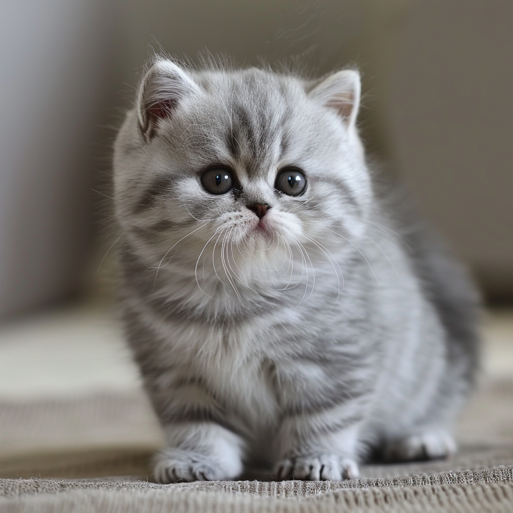
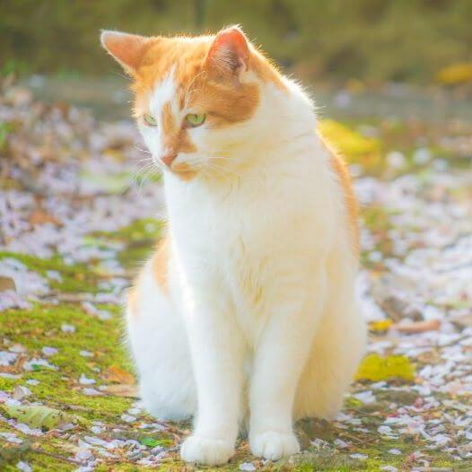
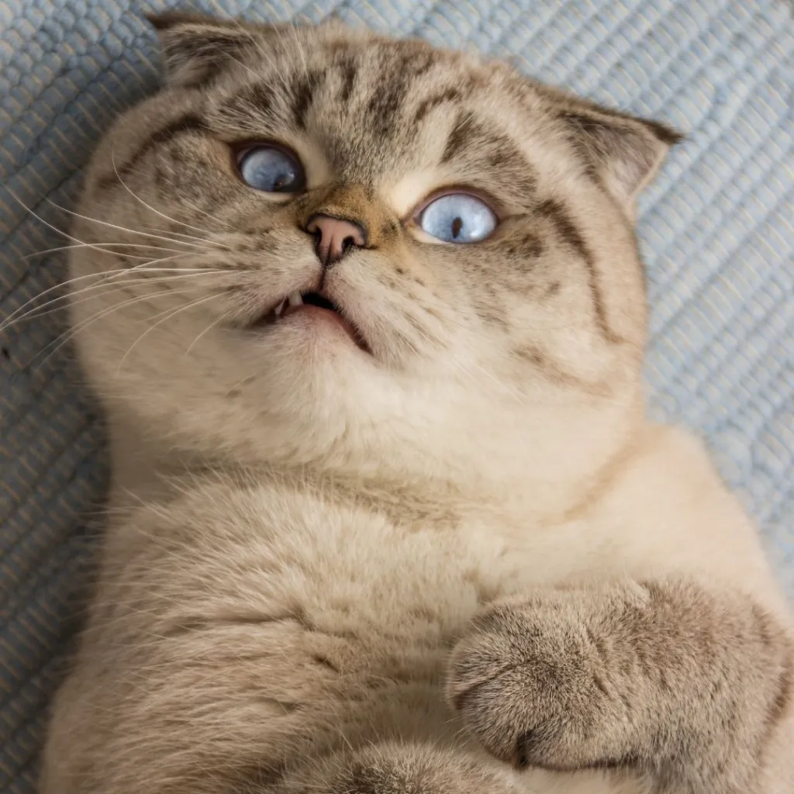
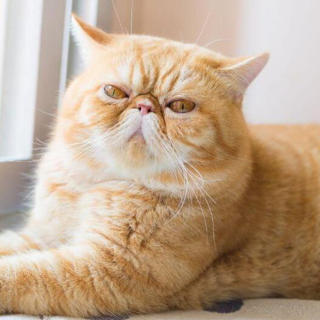

The Munchkin is a speedy little bundle of joy. This relatively young feline breed is infamous for its short legs, intelligent mind, and friendly, people-oriented demeanor. The characteristic short legs of the Munchkin cats are determined by the Munchkin "M" gene. Sporting either short, plush coats or medium to long silky ones, these energetic kitties come in all coat colors and patterns.

The Japanese Bobtail is an affectionate and friendly cat best known for its gentle nature, sweet personality, and signature pom-pom tail. They are fun-loving kitties who truly cherish every moment with their favorite humans.

Meet the only cat who has been described to resemble an owl: the enchanting Scottish Fold! These captivating felines are known to exhibit an unusually high level of affection and are characterized by the distinctive feature of forward-folded ears. At birth, all kittens will have straight ears. Those who carry the fold gene will begin showing this distinctive feature within 21 days. The rest of the kittens who don't develop the characteristic fold are known as "Straights". Scottish Folds come in all coat colors, lengths, and patterns.

Exotic Shorthairs share the same body type as the Persian and the Himalayan, yet are distinguished by their short, coarse coat that is significantly easier to maintain. These easy-going cats love to follow their humans from room to room, and they enjoy being in households with children and other pets.